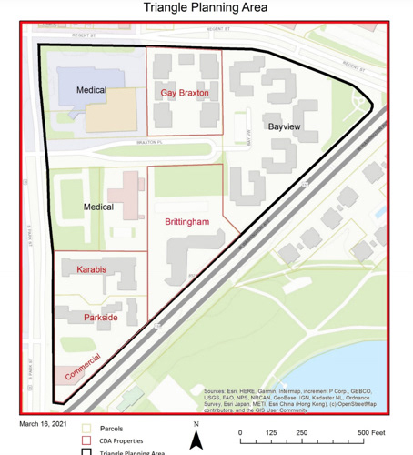
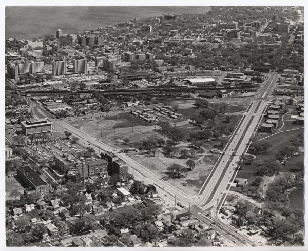

I first noticed this neighborhood during an early bike ride to work in the summer of 2024. It sits just off my daily bike path, yet I had never paid attention to it before. What caught my eye that morning was the warm orange glow from a window in a light blue building—just left of the frame above—contrasting against the deep blue sky as night gave way to morning. Intrigued, I took a small detour to explore.
As I walked around, I realized why I had overlooked this place before—it was still under construction. The grass hadn't fully grown in, and fencing restricted access to many of the homes. Still, some areas were completed, allowing me to wander a bit. Despite the colorful facades and a central play area designed to bring life to the space, the neighborhood felt sterile and cold. Perhaps it was the ongoing construction, but I also felt that the uniformity of the townhouses played a role; they were clearly built in bulk, as quickly and cheaply as possible. It felt like something more sinister was hidden behind the vibrant facades.
The city has grown rapidly over the past few decades, with housing supply struggling to keep up. Factors range from increasing UW-Madison enrollment to an influx of tech professionals and outdated zoning laws that remain unaddressed. The result has been a severe housing shortage, often leading to redevelopment—sometimes displacing longtime residents in favor of those who can afford higher rents. All of this contributed to my sense that something wasn't quite right with this development. Hell, even the buildings to the right of the frame, old and well past their prime, offered a small glimpse into what once stood where these new homes now rise. Therefore, I initially saw thus new development as just another case of pushing out residents to make way for those who could pay more.
However, that feeling began to fade as I delved deeper into the neighborhood and noticed some smaller details. On the porches of the completed homes were those tiny plastic “Hummers” like the ones we all wanted as kids, scattered toys, and strollers. Furthermore, in the center of it all, there was a large open grassy area (well, dirt at the time) with a wooden playset reminiscent of something I'd seen in a baboon exhibit at the San Diego Zoo. Beyond that, a sizable community center and a basketball court. All of these signs pointed to families living here and an effort to foster a strong sense of community. I left feeling hopeful and made a mental note to return and photograph the area.
At home, I did some research on the neighborhood. I learned that these new townhouses are part of the Bayview district in “The Triangle” neighborhood:

The Triangle has a rich history that I am unable to do justice here. (I recommend reading this article from the Isthmus to learn more). In short, the area was once a marsh, and was developed in the early 1900s by Italian immigrants who built homes, shops, and parks. Later, many African-American migrants fleeing the South settled here, apparently with little to no choice due to segregation laws. However, major redevelopment from the 1950s to 1970s replaced most of the original structures, while also displacing hundreds of families.

Since then, the neighborhood has remained largely low-income and diverse. And thanks to organizations like the Bayview Foundation, future plans aim to preserve that status. The recently redeveloped Bayview district was done so in stages, rather than a full tear-down and rebuild, to minimize the amount of displacement. Furthermore, most of units (ten of the 130) are subsidized by the federal government, allowing for lower-income families to stay in the neighborhood. Finally, one major concern of the residents before the redevelopment was that the new community would be much larger, thereby losing some sense of a smaller community. They were heard, and the overall district only grew by 28 units.
Most of the rest buildings in the Triangle Neighborhood are aging and, like the Bayview district, are set for another round of redevelopment in the 2020s. Much of the transition is already underway, as seen in my images, but one goal of mine is to document this moment of change. I want these images to evoke hope, as most of redevelopment plans appear thoughtful rather than recklessly displacing previous community for higher income transplants. However, only time will tell whether the city of Madison is able to accomplish this.